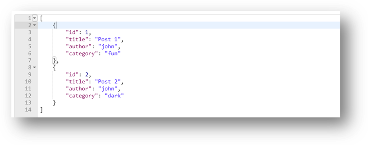

Usually, in a real web api, the requests might not be as simple as the one in the previous step. And might end up requiring you to carefully craft a URL that contains numerous parameters. For such cases postman allow you to save your requests in an organized manner so that they can be easily accessed and run on demand. To demonstrate let’s introduce a parameter to our previous request.
- There are two ways to do this, Click on the “Params” button on the address bar
- This action will open up a panel containing a table with key and value columns, in the key column add “author” and in the value coluemn add “john”. Essentially what this tells the apis is to get the posts authored by “john”.
- Let’s add another parameter to add more filters. Click on the “New key” box right below the author and enter “catetory” and in the corresponding “value” box enter “fun”. Your screen should look like the one below

- If you observer the address bar, you see these parameters are appended to the original address. Basically in Http Get request, this is is how additional information is sent to the server. What this also means is that, you can also go in there and type your parameters directly on the address bar. Go ahead and click on “Send”, you should see the result as below.
- You can also use the parameter UI to temporarly turn on or off each individual parameter, with out the need to delete and type every thing, try unchecking the category row and run send the request.
you should see the response like this
 -
You can also include some documentation by adding description for each parameter. So once you are done and happy with your request definition, you can hit the save button to save the request for another time. Click on the save button, and that opens up a modal window where you can sepecifiy some details on the request.
- Specify the request name as “Get Post Test”
- Click on the “+Create Collection” button and create a collection named “Manual Test” (more detail about it in the coming sections)
- And Click on save button to save the request.
- Once it is save, it will be available to run promptly in the left side panel of the user interface.